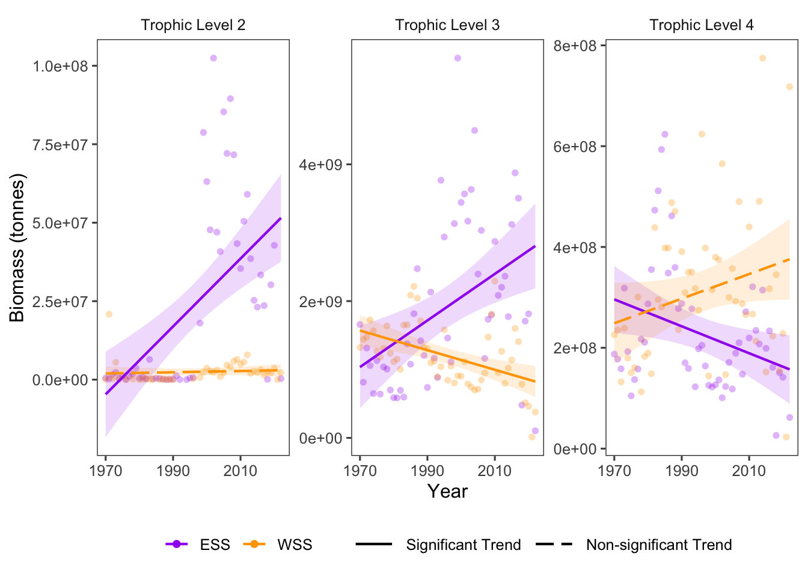

19 Stability of the Trophic Community: Biomass of Trophic Levels
Data Type: Tabular Data (within eco_indicators)
Spatial Scope: Maritimes
Duration 1970-2022
Source: Bundy et al. 2017
19.1 Introduction to Indicator
Stability of the trophic community is indicative of an ecosystem’s stability and resistance (Bundy, Gomez, and Cook 2017). Stability of the trophic community is quantified by biomass of fish captured in RV surveys, classified into trophic levels greater than one.
19.2 View Data
library(tidyr)
library(plotly)
library(stringr)
plotly_df <- data@data %>% inner_join(global_cols2)
# function to create plot with dropdown menu ------------------------------
make_biomassTL_dropdown_plot <- function(df,
year_col = "year",
region_col = "region",
value_suffix = "_value") {
# convert to long format
long <- df %>%
janitor::clean_names() %>%
pivot_longer(
cols = ends_with(value_suffix),
names_to = "metric",
values_to = "value"
) %>%
# remove suffix
mutate(
metric = str_remove(metric, "_value")
) %>%
# drop NAs (some regions don't have data for some variables or years)
tidyr::drop_na(value) %>%
arrange(region,value)
# find all metrics and regions
metrics <- sort(unique(long$metric))
regions <- unique(long[[region_col]])
# clean names for dropdown panels, helper
pretty_label <- function(x) str_to_title(gsub("biomass_", "", x)) %>% gsub("Tl","Trophic Level ",.)
# build plot -----------------
p <- plot_ly()
# Add bar traces: metric1 has region1..K, metric2 has region1..K, ...
for (metric_i in seq_along(metrics)) {
m <- metrics[metric_i]
for (region_i in regions) {
dat <- long %>%
filter(metric == m, .data[[region_col]] == region_i) %>%
group_by(.data[[year_col]],color, region_group, region_group_label) %>% # in case you have multiple rows per year
summarise(value = sum(value), .groups = "drop") %>%
arrange(.data[[year_col]])
group_name <- unique(dat$region_group)
color <- unique(dat$color)
# If a region truly has no data for that metric, add an empty trace
# (keeps trace indexing stable)
if (nrow(dat) == 0) {
dat <- tibble::tibble(!!year_col := integer(0), value = numeric(0))
}
p <- p %>% add_bars(
data = dat,
x = ~.data[[year_col]],
y = ~value,
name = as.character(region_i),
legendgroup = group_name,
legendgrouptitle = list(
text = ifelse(group_name == "ESS",
"Eastern Scotian Shelf Zones",
"Western Scotian Shelf Zones")),
showlegend = (metric_i == 1),
visible = (metric_i == 1),
marker = list(color = color),
hovertemplate = paste0("<b>", region_i,":</b> ","%{y:,.2s}<extra></extra>") )
}
}
n_regions <- length(regions)
n_traces <- length(metrics) * n_regions
buttons <- lapply(seq_along(metrics), function(metric_i) {
vis <- rep(FALSE, n_traces)
shl <- rep(FALSE, n_traces)
idx_start <- (metric_i - 1) * n_regions + 1
idx_end <- metric_i * n_regions
vis[idx_start:idx_end] <- TRUE
shl[idx_start:idx_end] <- TRUE
list(
method = "update",
args = list(
list(visible = vis, showlegend = shl),
list(
title = pretty_label(metrics[metric_i]),
yaxis = list(title = "Biomass (tonnes)")
)
),
label = pretty_label(metrics[metric_i])
)
})
p %>%
layout(
barmode = "stack",
hovermode = "x unified",
title = pretty_label(metrics[1]),
xaxis = list(title = str_to_title(year_col), type = "category"), # keep one bar per year
yaxis = list(title = "Biomass (tonnes)", fixedrange = TRUE),
legend = list(
x = 1.02, xanchor = "left",
y = 1, yanchor = "top",
groupclick = "toggleitem",
itemdoubleclick = FALSE
),
updatemenus = list(list(
type = "dropdown",
x = 0, xanchor = "left",
y = 1.15, yanchor = "top",
buttons = buttons
)),
margin = list(r = 180, t = 80)
)
}
# usage:
p <- make_biomassTL_dropdown_plot(plotly_df)
p <- p %>% config(displayModeBar= F)
p Figure 19.1: Biomass of Trophic Levels in Scotian Shelf regions; 1970-2022. Use dropdown box to select a target trophic level, and click legend to isolate regions.
19.3 Trends
Biomass of Trophic Levels changed over time with opposing patterns in the Eastern and Western Scotian Shelf (Fig. 19.2).
In the Western Scotian Shelf, the trophic community shifted towards higher trophic levels through time, with TL2 experiencing little change, TL3 significantly decreasing, and TL4 increasing, although with a non-significant linear slope (Fig. 19.2).
In the Eastern Scotian Shelf, the opposite pattern occurred, with TL2 and TL3 increasing significantly over time, and biomass of TL4 decreasing, indicating a shift towards lower trophic level species (Fig. 19.2).
Patterns of trophic level biomass were fairly consistent within individual NAFO regions (Fig. 19.1).

Figure 19.2: Overall Biomass trends for Trophic Levels overtime.
19.3.1 Summary Table by Region and Functional Group
Trends in Biomass over time for each guild and each NAFO region within the Eastern and Western Scotian Shelf (1970-2022) are shown in the table below (Table 19.1).
| Trophic Level | Eastern Scotian Shelf Biomass Trends (tonnes/year) | Western Scotian Shelf Biomass Trends (tonnes/year) |
|---|---|---|
| Tl2 |
4VS: 4.81e+05 ∗ 4W: 4.78e+05 ∗ |
4X: 2.18e+04 |
| Tl3 |
4VN: 2.28e+06 4VS: 1.51e+07 ∗ 4W: 2.08e+07 ∗ |
4X: -1.43e+07 ∗ |
| Tl4 |
4VN: -2.71e+05 4VS: -5.06e+05 4W: -1.05e+06 |
4X: 2.44e+06 |
19.4 Relevance to Research and Stock Assessments
Assessment of patterns of trophic structure through time reveal patterns of stability in marine food webs. In this region, trophic structure has shifted in both the Eastern and Western Scotian Shelf regions since the 1970s, indicating trophic instability of the community. Because fishing activities generally target species at higher trophic levels, shifts towards communities dominated by lower trophic level species could be the result of harvest pressure at the higher trophic levels, and shifts in the opposite direction could indicate fisheries recovery or effective management.
19.5 Variable Definitions
| variable | description | unit |
|---|---|---|
| year | Year of data collection | |
| region | Region over which data are summarized | |
| biomass_TL{X}_value | Biomass of select Trophic Levels within regions | tonnes |